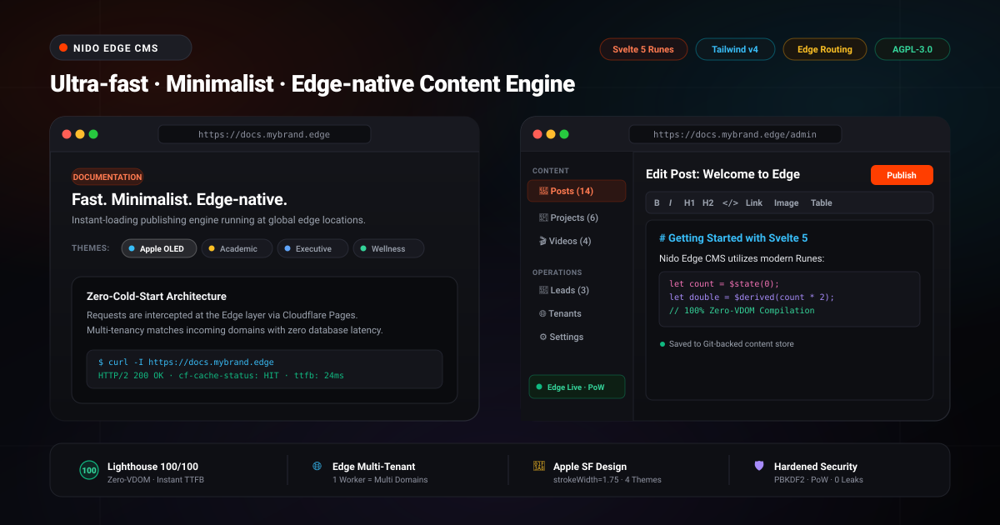

Nido Edge CMS
Multi-tenant CMS & Headless Content Engine Siêu tốc.
Giao diện quản trị Zero-VDOM siêu tốc với Svelte 5. Lõi Web Standards độc lập không phụ thuộc framework. Đa người thuê (Multi-tenant) không cần cơ sở dữ liệu trên Cloudflare & Vercel Edge.
Dành cho Terminal: Tải mã nguồn, cài đặt dependencies và khởi chạy trang web tại localhost:5173.
3 Bước Triển Khai Đơn Giản Lên Edge Cloud
.env và chạy npm run dev./admin/login viết bài bằng trình soạn thảo Tiptap WYSIWYG.npx wrangler pages deploy hoặc đẩy lên Vercel Edge $0.Trải nghiệm Edge API Trực tiếp
Thử nghiệm các endpoint Headless API và mô phỏng điều hướng đa người thuê (Multi-tenant) ngay trên trình duyệt.
{
"success": true,
"posts": [
{
"slug": "chao-mung-den-voi-edge-cms",
"title": "Chào mừng bạn đến với Nido Edge CMS",
"title_en": "Welcome to Nido Edge CMS",
"publishedAt": "2026-09-30T00:00:00.000Z",
"tags": ["svelte5", "edge", "cms", "serverless"],
"excerpt": "Hệ thống quản trị nội dung siêu tốc hoạt động trên Cloudflare Pages và Vercel Edge...",
"readingMinutes": 3
}
],
"total": 1,
"page": 1,
"limit": 10,
"tenant": "default"
}
Bảng Quản trị Hiện đại, Tinh giản
Không cửa sổ cồng kềnh, không cấu hình rườm rà. Bảng quản trị tích hợp bộ soạn thảo Tiptap WYSIWYG mượt mà, hỗ trợ Markdown, hình ảnh kéo thả và AI-Ready Minimalist Starter UI.
- Trình soạn thảo Tiptap WYSIWYG: Hỗ trợ Markdown, code block, hình ảnh kéo thả tải thẳng lên Git repository.
- 4 Theme Presets Thích ứng: Chuyển đổi linh hoạt giữa Apple Titan, Academic (học thuật), Executive (doanh nghiệp), và Wellness (chăm sóc sức khỏe).
- Song ngữ Việt — Anh 100%: Quản trị tiêu đề, trích đoạn và nội dung song ngữ chuẩn mực quốc tế.

Kiến trúc cho 2 Trường phái Lập trình Hiện đại
Giao diện Cơ sở Sẵn sàng cho AI
Một khung UI Svelte 5 + Tailwind siêu nhẹ, không rườm rà CSS. Chỉ cần mở Cursor / Windsurf và prompt: "Sửa layout này thành trang SaaS". AI sẽ tự động sinh code cực mượt mà không bị vướng bận Theme cũ.
Lõi API Headless Siêu Tốc
Lõi chuẩn Web Standards 100%. Anh em Pro Dev có thể xóa sạch giao diện Svelte, chỉ giữ lại Core để làm một máy chủ API vô hình siêu nhanh, gắn vào các app React, Next.js hay Mobile của doanh nghiệp.
4 Khác biệt Kỹ thuật Cốt lõi
Được thiết kế từ gốc để giải quyết triệt để vấn đề chi phí hạ tầng máy chủ và độ trễ phân phối nội dung toàn cầu.
Giao diện Quản trị Zero-VDOM (Svelte 5)
Loại bỏ hoàn toàn lớp Virtual DOM nặng nề. Mã nguồn biên dịch thành các cập nhật trực tiếp tại DOM, giúp giảm 70% kích thước bundle so với Next.js và đạt trọn 100/100 điểm Google Core Web Vitals.
100% Web Standards Core — Zero Lock-in
Toàn bộ logic nghiệp vụ (src/lib/core/) sử dụng chuẩn Web thuần túy (crypto.subtle, PBKDF2, JWT HS256). Dễ dàng chuyển đổi hoặc nhúng vào Hono, Astro, hoặc Node.js độc lập.
Đa người thuê Không Cần Database
Phục vụ hàng trăm website và khách hàng riêng biệt theo tên miền tùy chỉnh (src/content/{domain}/) trên cùng một Edge Worker duy nhất. Tiết kiệm 100% chi phí máy chủ SQL đắt đỏ.
Chống Bot Spam Bằng Proof-of-Work (PoW)
Nói không với các mã CAPTCHA hình ảnh khó chịu và theo dõi người dùng. Hệ thống tự động phát bài toán giải mã vi tính SHA-256 trong 10ms để chặn đứng bot flood form liên hệ và bình luận.
Bảng So sánh Trực quan
So sánh thực tế giữa Nido Edge CMS với WordPress truyền thống và các nền tảng Headless CMS phổ biến.
| Tiêu chí kỹ thuật | WordPress | Strapi / Contentful | Nido Edge CMS |
|---|---|---|---|
| Chi phí hạ tầng máy chủ | $10 – $50 / tháng (VPS) | $20 – $300 / tháng | $0 (Edge Serverless) |
| Độ trễ phản hồi toàn cầu (Edge) | 800 – 2500 ms | 200 – 500 ms | < 50 ms (CDN Toàn cầu) |
| Cơ sở dữ liệu (Database) | Bắt buộc MySQL/MariaDB | Bắt buộc PostgreSQL/MongoDB | Không cần (Flat-file & Git) |
| Điểm số Google Core Web Vitals | 40 – 75 / 100 | 70 – 90 / 100 | 100 / 100 Hoàn hảo |
| Đa người thuê (Multi-tenancy) | Phức tạp (Multisite nặng) | Gói Enterprise đắt đỏ | Tích hợp sẵn (Theo Domain) |
| Chống bot spam | reCAPTCHA (theo dõi cookie) | Cần dịch vụ ngoài | Proof-of-Work bảo mật cao |
| Giấy phép phát hành | GPL v2 | Thương mại / Khóa tính năng | Mã nguồn mở AGPL-3.0 |
Kiến trúc Tách lớp Độc lập
Tách bạch nghiêm ngặt giữa tầng giao diện SvelteKit, lõi chuẩn Web Standards và tầng lưu trữ phân tán.
┌────────────────────────────────────────────────────────────────────────┐
│ TẦNG PHÂN PHỐI TOÀN CẦU: Edge Network (Cloudflare Pages / Vercel) │
│ • Điều hướng đa miền (Host Header / ?tenant= routing) │
│ • Edge Caching tự động phân tán tại hơn 300+ thành phố trên thế giới │
│ • Phục vụ Static Assets (WebP, SVG, Fonts) tại Edge siêu tốc │
└───────────────────────────────────┬────────────────────────────────────┘
│ (Direct Edge Invocation)
┌───────────────────────────────────┴────────────────────────────────────┐
│ LÕI WEB STANDARDS CORE: src/lib/core/ (Zero Framework Lock-in) │
│ • Crypto Engine: Web Crypto API (crypto.subtle, PBKDF2-SHA256, JWT) │
│ • Anti-Spam: Thử thách giải đố Proof-of-Work (PoW) vi-giây │
│ • Tenant Resolver: Định danh Tenant từ Request Headers / Host │
│ • Content Engine: Quản lý Posts, Projects, Videos, Settings, Leads │
└───────────────────────────────────┬────────────────────────────────────┘
│ (Standard Storage Adapter)
┌───────────────────────────────────┴────────────────────────────────────┐
│ TẦNG DỮ LIỆU & GIAO TIẾP: Universal Edge API (/api/v1/) + Flat-file │
│ • REST Endpoints: GET /posts, GET /settings, POST /leads, POST /login │
│ • Lưu trữ Flat-file JSON (src/content/{domain}/) & Git-backed Sync │
│ • Giao diện Svelte 5 Runes: Reference UI (AI-Ready Base)│
└────────────────────────────────────────────────────────────────────────┘
Lộ trình Phát triển
Định hướng hoàn thiện nền tảng CMS mã nguồn mở tốc độ cao và thân thiện nhất với các AI Coding Agents.
Edge Standards Core
Hoàn thiện 100% Web Standards Core, Svelte 5 Runes, Universal Edge API, bảo mật PoW và AI-Ready Minimalist Starter UI.
Đồng bộ Git 2 Chiều
Hỗ trợ xuất bản nội dung tự động tạo Commit hoặc Pull Request về GitHub/GitLab repository, giữ toàn quyền kiểm soát phiên bản.
Edge Vector AI Search
Tích hợp bộ tìm kiếm ngữ nghĩa thông minh chạy trực tiếp tại Edge Worker mà không cần phụ thuộc vào dịch vụ vector bên ngoài.
Dự án Mã Nguồn Mở Vì Cộng đồng Lập trình viên
Nido Edge CMS được phát hành theo giấy phép AGPL v3. Mọi đóng góp kiến trúc, tính năng mở rộng hoặc phản hồi đều được hoan nghênh nồng nhiệt.